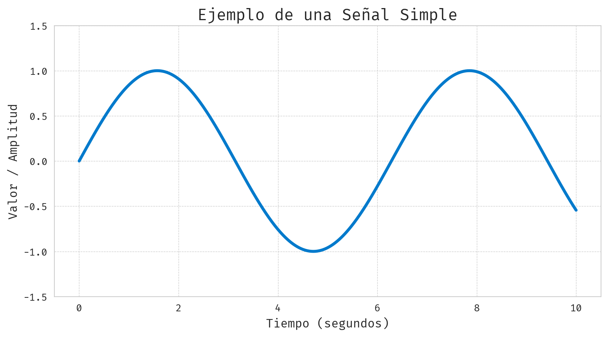
Procesamiento de Señales e Imagenes
Ingeniería Biomédica
PSIM – 101849
¡Bienvenidos!
¡Hola a todos y bienvenidos! Soy Pablo Caicedo, y hoy vamos a hacer algo increíble: vamos a aprender a ver lo invisible. Vamos a explorar cómo le enseñamos a las computadoras a entender el lenguaje secreto del cuerpo humano. Este campo se llama Procesamiento de Señales e Imágenes Biomédicas, y es una de las áreas más emocionantes de la ingeniería y la medicina hoy en día.
La Gran Pregunta
Nota
¿Y si tu celular pudiera detectar una enfermedad cardíaca con solo tocarlo?
¿Y si una computadora pudiera ver un tumor que el ojo humano más experto aún no distingue?
Imaginen por un momento… ¿Y si su celular pudiera detectar una enfermedad cardíaca con solo tocarlo? ¿Y si una computadora pudiera ver un tumor en una radiografía, incluso antes de que el ojo humano más experto lo note? Esto no es ciencia ficción. Es lo que hacemos todos los días en este campo. La pregunta no es ‘si’ es posible, sino ‘cómo’ lo hacemos posible.
Bienvenida
Procesamiento de señales e imágenes De los sonidos y las fotos a la salud y la tecnología.
Guion: Preguntar a los estudiantes: ¿Qué señales usan sin darse cuenta? (Wi-Fi, música, ritmo del corazón). Explicar que hoy aprenderán a mirar cómo las computadoras entienden esas señales e imágenes.
Nuestro Viaje de Hoy
Los Lenguajes Secretos del Cuerpo: Descubriremos las señales eléctricas que nos mantienen vivos.
Una Imagen Vale Más que Mil Pruebas: Veremos cómo convertimos el interior del cuerpo en imágenes.
El Truco de Magia: ‘Procesar’: Aprenderemos a limpiar y mejorar estos datos para encontrar pistas.
¡Tu Turno! Conviértete en Ingeniero/a Biomédico/a: Realizarán análisis reales en nuestro laboratorio digital.
Para entender cómo funciona esta ‘magia’, nuestro viaje de hoy tendrá cuatro paradas. Primero, descifraremos los lenguajes secretos del cuerpo, las señales eléctricas. Luego, veremos cómo creamos imágenes del interior de nuestro cuerpo. Después, revelaremos el truco de magia que llamamos ‘procesamiento’ para limpiar y mejorar estos datos. Y finalmente, la parte más emocionante: ustedes mismos se convertirán en ingenieros y realizarán análisis en nuestro laboratorio digital.
Parte I: Señales Biomédicas
¿Qué es una Señal? Información en Movimiento
Empecemos por lo básico. ¿Qué es una señal? Es simplemente información que cambia con el tiempo. Piensen en la música: las notas suben y bajan, creando una melodía. Eso es una señal. O la temperatura a lo largo de un día: sube al mediodía y baja por la noche. En el cuerpo, en lugar de notas o grados, medimos cosas como la actividad eléctrica, que sube y baja de formas muy específicas.
La Sinfonía Eléctrica del Cuerpo
El Electrocardiograma (ECG) es el ritmo del corazón, nuestro tambor principal.
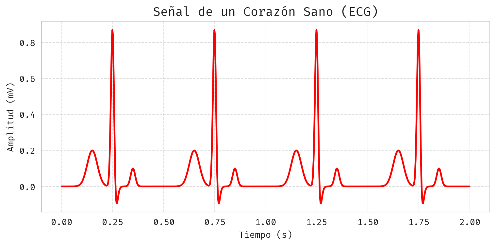
¿Qué nos dice el ECG?
- ¿Cuál es el ritmo cardíaco?
- ¿El corazón late muy rápido o muy lento?
- ¿Hay alguna parte que no funciona en armonía?
- Permite diagnosticar problemas y salvar vidas.
Nuestro cuerpo es como una orquesta eléctrica. El corazón es el tambor, marcando un ritmo constante y poderoso. La señal que produce se llama Electrocardiograma o ECG. El cerebro es como la sección de cuerdas, con miles de neuronas ‘hablando’ a la vez en una conversación compleja. Esa señal es el Electroencefalograma o EEG. Escuchando estas ‘melodías’, los médicos pueden saber si todo funciona en armonía.
El Desafío: Encontrar la Señal en el Ruido
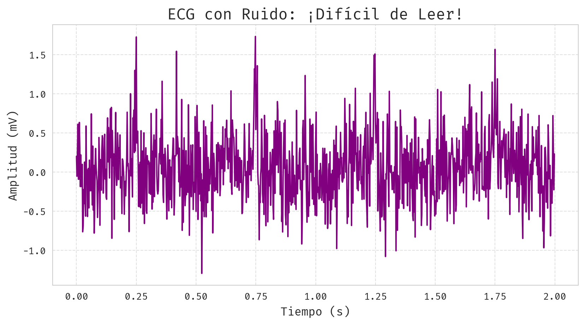
Pero en el mundo real, estas señales no son tan claras. Imaginen tratar de escuchar a un amigo en una fiesta muy ruidosa. El ‘ruido’ es todo lo que interfiere: otros aparatos eléctricos, el movimiento del paciente, etc. Este ruido puede ocultar información vital que el médico necesita ver. Como ven aquí, el patrón claro del latido casi ha desaparecido.
La Solución: Cancelación de Ruido Digital
Señal Ruidosa (Original)
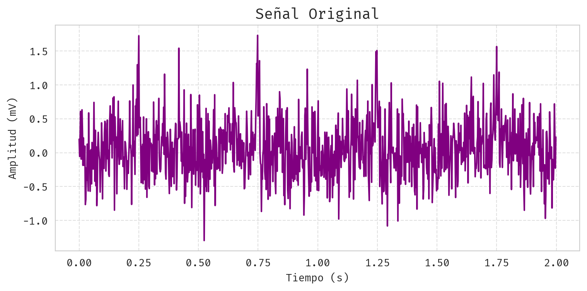
Señal Filtrada (Limpia)
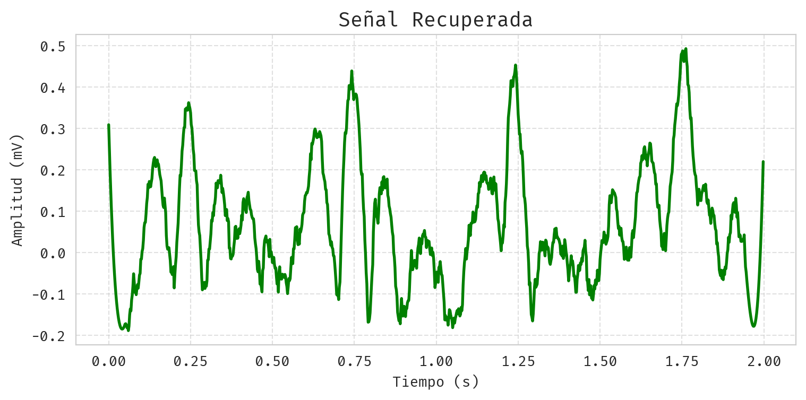
Aquí es donde entra nuestra ‘magia’. Usamos algoritmos de ‘filtrado’. Es como ponerse unos audífonos con cancelación de ruido. La computadora mira cada punto de la señal y lo promedia con sus vecinos de una manera inteligente. El ruido, al ser aleatorio y rápido, se cancela, ¡pero el patrón real del latido, que es más lento y repetitivo, se mantiene! Así ‘rescatamos’ la información importante, como pueden ver en la gráfica de la derecha. Pasamos de algo ilegible a una señal clara y diagnóstica.
Parte II: Imágenes Biomédicas
¿Qué es una Imagen? Una Pintura por Números
Los Números (Píxeles)
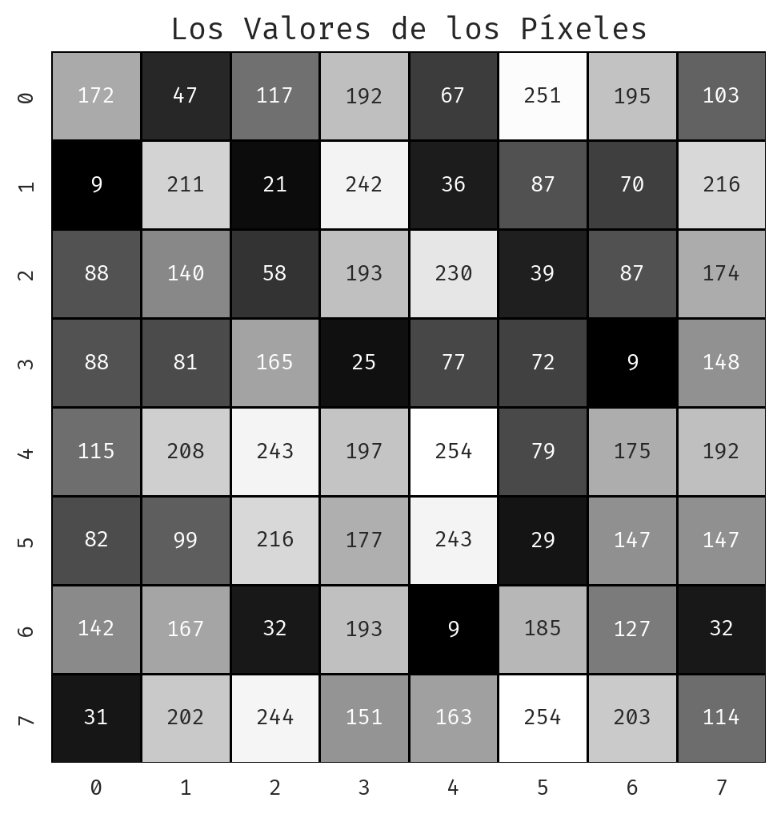
La Imagen Resultante
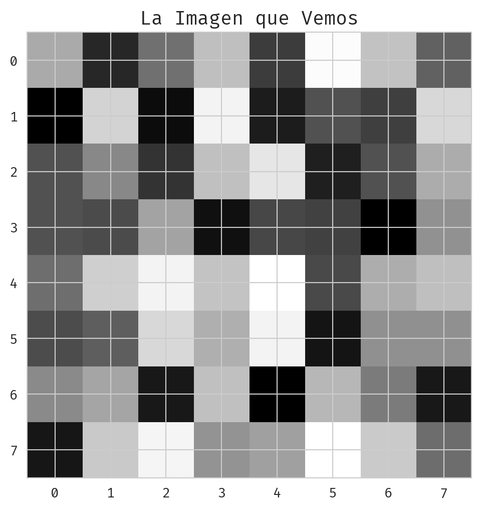
Ahora hablemos de imágenes. Para una computadora, una imagen no es una foto, es una cuadrícula gigante de números. ¡Como un lienzo para pintar por números! Cada número representa el brillo de un puntito llamado ‘píxel’. Un número bajo como 0 puede ser negro, un número alto como 255 puede ser blanco, y los números intermedios son todos los tonos de gris. A la izquierda ven los números, y a la derecha, la imagen que la computadora crea a partir de ellos.
Una Ventana Hacia el Cuerpo
Radiografía (Rayos X) Ideal para ver estructuras densas como los huesos.
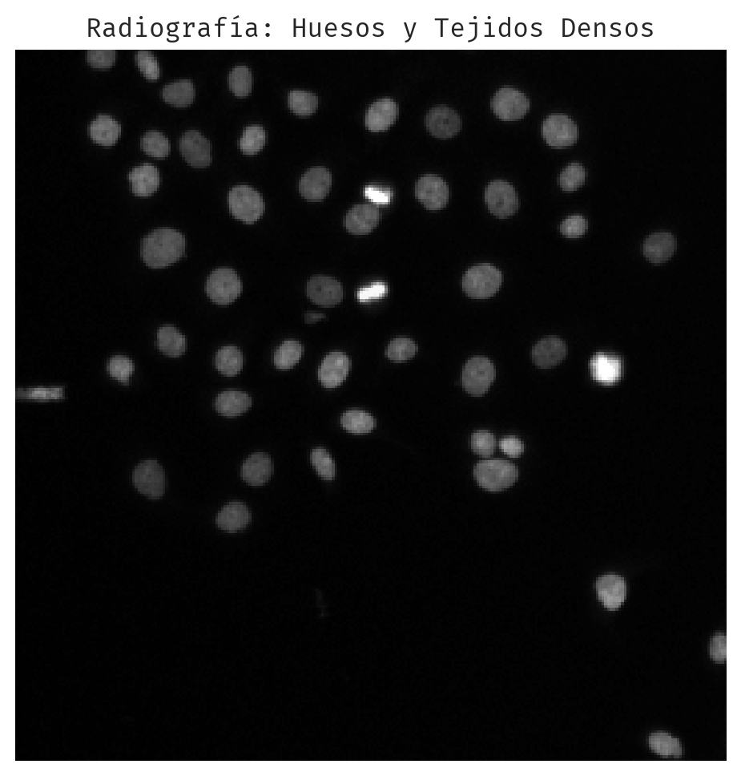
Resonancia Magnética (MRI) Perfecta para ver tejidos blandos como el cerebro.
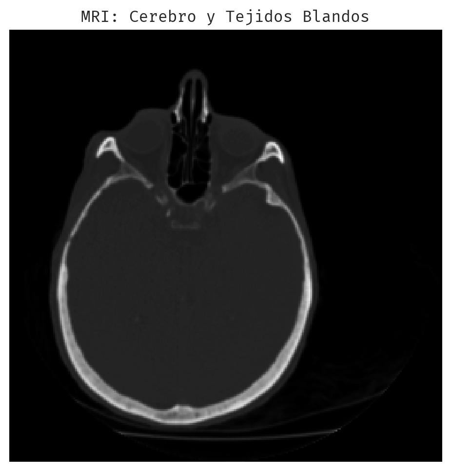
Con esta idea, podemos crear ventanas increíbles hacia el interior del cuerpo. Las Radiografías (Rayos X) son como la sombra del cuerpo; son excelentes para ver cosas densas como los huesos. Las Resonancias Magnéticas (MRI) son diferentes; crean un mapa detallado del agua en nuestro cuerpo, lo que las hace perfectas para ver tejidos blandos como el cerebro, los músculos o los órganos.
El Desafío: Hacer Visible lo Invisible
A veces, la información que buscamos en una imagen médica es muy sutil. Puede ser como tratar de encontrar a un amigo en una foto muy oscura o con mucha niebla. El contraste puede ser bajo, o los bordes entre un tejido sano y uno enfermo pueden ser borrosos. El ojo humano puede pasar por alto estos detalles cruciales.
La Solución: Resaltadores Digitales
Imagen Original
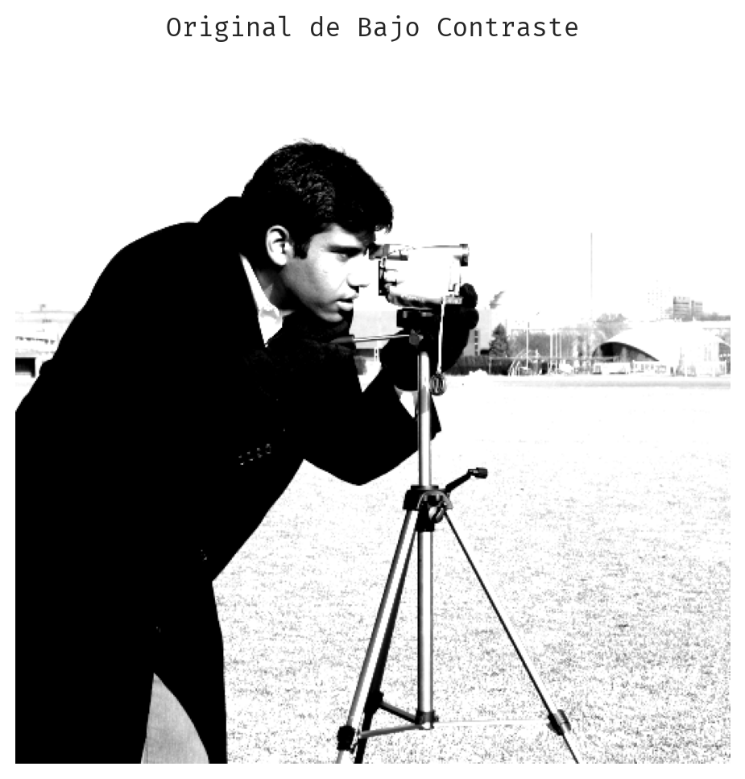
Imagen Mejorada
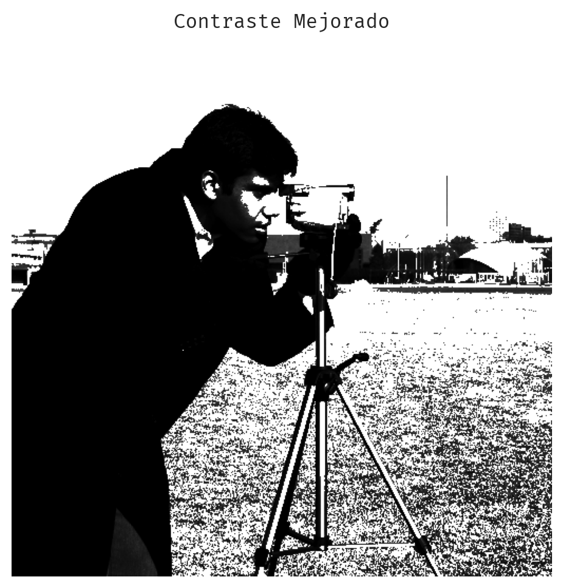
¡De nuevo, el procesamiento viene al rescate! Podemos darle ‘superpoderes’ a la imagen. Con el ajuste de contraste, le decimos a la computadora: ‘haz que las partes oscuras sean más oscuras y las claras más claras’, ¡como ajustar el brillo en Instagram! Fíjense cómo en la imagen de la derecha, los detalles que antes estaban ocultos ahora son perfectamente visibles. Otra técnica es la detección de bordes, que dibuja una línea donde hay un cambio brusco de brillo, ayudando a los médicos a ver la forma exacta de los órganos o tumores.
Parte III: Aplicaciones
Áreas de aplicación del procesamiento de señales e imágenes
Diagnóstico automatizado Identificación de enfermedades en ECG, EEG o imágenes médicas.
Monitoreo en tiempo real Vigilancia en UCI con señales continuas de corazón, respiración y cerebro.
Telemedicina Transmisión y compresión de señales para consultas a distancia.
Rehabilitación y prótesis inteligentes Uso de señales EMG para controlar prótesis y exoesqueletos.
Detección temprana de eventos críticos Anticipación de arritmias, crisis epilépticas o caídas.
Biometría y seguridad Reconocimiento de voz, rostro o iris.
Imagenología avanzada Segmentación de órganos o tumores en 3D para cirugía o radioterapia.
Entretenimiento y multimedia Filtros en fotos y videos, mejora de audio y realidad aumentada.
Guion: resaltar que la mitad de las aplicaciones impacta directamente en salud y la otra mitad en la vida cotidiana. Pedir a los estudiantes que piensen en qué columna usan más sin darse cuenta.
Plataforma para el monitoreo de salud de adultos mayores
- Detección ambulatoria de actividades diarias.
- Detección ambulatoria de riesgo de caída.
- Detección ambulatoria de riesgo neuronal.
- Detección ambulatoria de riesgo psico-social.
- Detección ambulatoria de riesgo cardíaco
- Monitorización de terapias ambulatorias para la rehabilitación de adultos mayores
Creación de ambientes de habitación saludables usando realimentación sensorial
- Neurofeedback emocional usando música.
- Neurofeedback de memoria procedimental.
- Neurofeedback en automotores.
- Monitorización ambulatoria de estado emocional.
- Monitorización ambulatoria de terapias emocionales
Apoyo tecnológico mediante IA a intervenciones clínicas
- Detección de anomalías en imágenes mediante segmentación heurística.
- Planeación pre-operatoria mediante el uso de inteligencia artificial.
- Evaluación de espasticidad mediante el uso tecnología.
Detección de información en terapias y proyectos de rehabilitación
- Generación de interfaces cerebro-computador
- Generación de algoritmos de clasificación de intención de movimiento
- Monitorización de terapias de rehabilitación.
Invitación
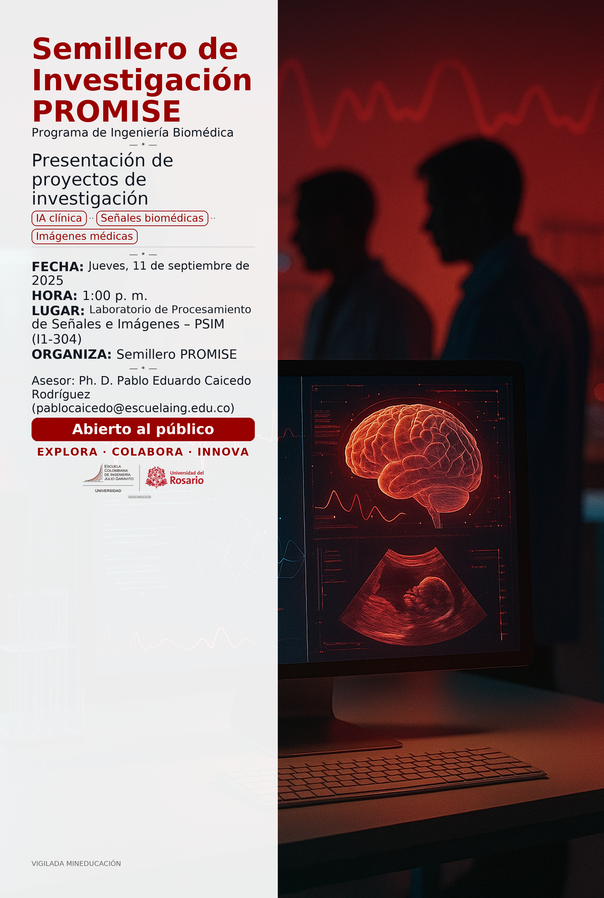
Parte IV: ¡Tu Turno! Laboratorio Digital
Nuestras Herramientas
Vamos a usar este mismo documento como nuestro cuaderno de laboratorio digital.
- Verán bloques de código en Python.
- No necesitan ser expertos. El código ya está escrito.
- Su misión: ejecutarlo (con el botón de play ►), observar los resultados e incluso experimentar cambiando algunos valores.
¡Vamos a hacer ciencia de verdad!
¡Suficiente teoría! Es hora de que se pongan la bata de laboratorio. Vamos a usar este mismo documento como nuestro ‘cuaderno de laboratorio digital’. Verán bloques de código en Python. No se asusten, no necesitan ser expertos. El código ya está escrito. Su misión es ejecutarlo, observar los resultados e incluso experimentar cambiando algunas cosas. ¡Vamos a hacer ciencia de verdad!
Misión 1: ¡De Números a Dibujos! 📝
Objetivo: Comprender que las imágenes son, en el fondo, solo listas de números e instrucciones.
Materiales: Una hoja de papel cuadriculado y un lápiz.
Instrucciones (Parte A - La Imagen Misteriosa):
En una hoja resalta los números pares y los primos permitiendo ver el mensaje secreto.
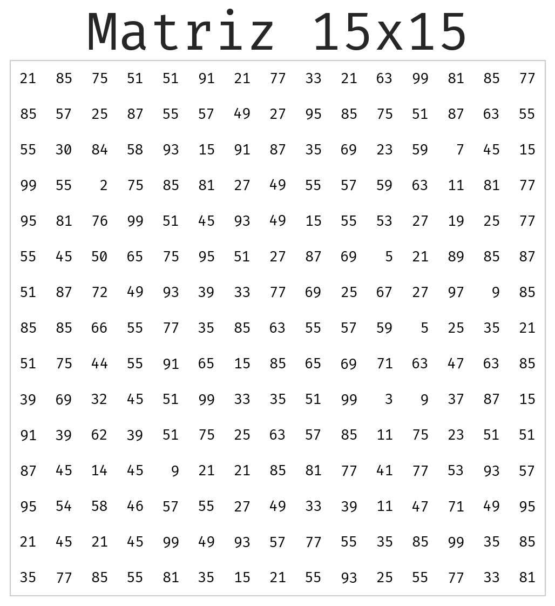
Misión 2: ¡De Números a Dibujos! 📝
Objetivo: Comprender que las señales e imágenes son, en el fondo, solo listas de números e instrucciones.
Materiales: Una hoja de papel cuadriculado y un lápiz.
Instrucciones (Parte A - La Señal Misteriosa):
- En tu hoja, dibuja un eje: el horizontal se llama “Tiempo” (de 1 a 10) y el vertical “Valor” (de 1 a 10).
- Te daré pares de números
(Tiempo, Valor). Dibuja un punto en cada coordenada. - Coordenadas: (1, 2), (2, 4), (3, 6), (4, 8), (5, 6), (6, 4), (7, 2), (8, 4), (9, 6), (10, 8).
- Une los puntos en orden. ¿Qué letra o forma simple has dibujado?
Instrucciones (Parte B - La Imagen Secreta):
- En otra parte de tu hoja, dibuja una cuadrícula de 8x8.
- Te daré coordenadas
(fila, columna)que debes rellenar o colorear. La fila 1 es la de arriba, la columna 1 es la de la izquierda. - Píxeles a colorear:
- Fila 2: Columnas 3, 4, 5, 6
- Fila 3: Columnas 2, 7
- Fila 4: Columnas 2, 4, 5, 7
- Fila 5: Columnas 2, 7
- Fila 6: Columnas 3, 6
- Fila 7: Columnas 4, 5
- Aléjate un poco… ¿Qué imagen has creado?
Misión 3: Rescatar un Latido
El Reto: Hemos recibido la señal de ECG de un paciente, pero está llena de ruido. Es imposible para un médico leerla así.
Tu Tarea: Ejecuta el código de abajo para aplicar un filtro digital y limpiar la señal. ¡El diagnóstico del paciente depende de ti!
import numpy as np
import matplotlib.pyplot as plt
from scipy.signal import savgol_filter
import seaborn as sns
sns.set_style("whitegrid")
plt.rcParams['font.family'] = 'Fira Code'
# --- PASO 1: Generar la señal de un paciente (ECG con ruido) ---
fs = 500
tiempo = np.arange(1500) / fs
# Señal limpia (la que queremos encontrar)
latido_limpio = np.sin(2 * np.pi * 1 * tiempo) * 10
latido_limpio[tiempo % 1 < 0.1] *= 5 # Simular pico QRS
latido_limpio[tiempo % 1 > 0.8] *= 0.5 # Simular onda T
ecg_limpio = np.tile(latido_limpio[:fs], 3)
# Añadir ruido para simular una mala medición
np.random.seed(101)
ruido = 2.5 * np.random.randn(len(ecg_limpio))
ecg_ruidoso = ecg_limpio + ruido
# --- PASO 2: Visualizar la señal ruidosa ---
print("Mostrando la señal original recibida del paciente...")
plt.figure(figsize=(12, 5))
plt.plot(tiempo, ecg_ruidoso, label='Señal Ruidosa Original', color='purple')
plt.title('Señal del Paciente (Sin Procesar)', fontsize=16)
plt.xlabel('Tiempo (s)')
plt.ylabel('Amplitud (mV)')
plt.legend()
plt.show()
# --- PASO 3: Aplicar el filtro para limpiar la señal ---
# <<< ¡LA LÍNEA MÁGICA! Este es el filtro.
# Prueba cambiar window_length a un número más pequeño (ej. 11) o más grande (ej. 101) y ve qué pasa.
ecg_filtrado = savgol_filter(ecg_ruidoso, window_length=51, polyorder=3)
# --- PASO 4: Visualizar la señal limpia ---
print("\n¡Filtro aplicado! Mostrando la señal recuperada...")
plt.figure(figsize=(12, 5))
plt.plot(tiempo, ecg_filtrado, label='Señal Filtrada y Limpia', color='green', linewidth=2.5)
plt.title('Señal del Paciente (Procesada)', fontsize=16)
plt.xlabel('Tiempo (s)')
plt.ylabel('Amplitud (mV)')
plt.legend()
plt.show()Mostrando la señal original recibida del paciente...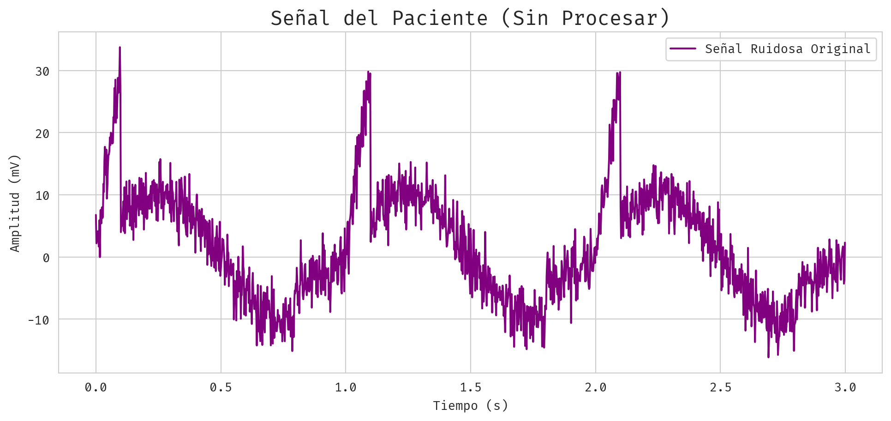
¡Filtro aplicado! Mostrando la señal recuperada...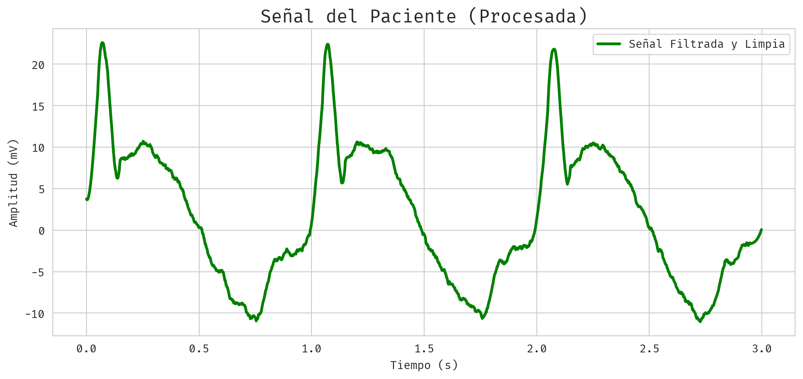
Misión 4: Mapear el Cerebro
El Reto: Tenemos una imagen de resonancia magnética. Para estudiarla, un neurólogo necesita ver claramente los contornos de las diferentes estructuras.
Tu Tarea: Ejecuta el código para aplicar un filtro de ‘detección de bordes’ y crear un mapa de los contornos del cerebro.
import matplotlib.pyplot as plt
from skimage import data, filters, color
import seaborn as sns
sns.set_style("white")
plt.rcParams["font.family"] = "Fira Code"
# --- PASO 1: Cargar la imagen del cerebro ---
# Usamos una imagen de ejemplo de scikit-image
print("Cargando imagen de resonancia magnética...")
imagen_original = data.brain()[9, :, :]
# --- PASO 2: Aplicar el filtro de detección de bordes ---
# <<< ¡LA LÍNEA MÁGICA! Este es el filtro de Sobel.
# Detecta dónde hay cambios bruscos de brillo.
bordes = filters.sobel(imagen_original)
# --- PASO 3: Mostrar los resultados lado a lado ---
print("¡Filtro de bordes aplicado! Mostrando comparación...")
fig, axes = plt.subplots(1, 2, figsize=(12, 6))
# Imagen original
ax = axes
ax[0].imshow(imagen_original, cmap=plt.cm.gray)
ax[0].set_title("Imagen Original del Cerebro", fontsize=14)
ax[0].axis("off")
# Imagen con bordes detectados
ax[1].imshow(bordes, cmap=plt.cm.gray)
ax[1].set_title("Mapa de Contornos (Bordes)", fontsize=14)
ax[1].axis("off")
plt.tight_layout()
plt.show()Cargando imagen de resonancia magnética...
¡Filtro de bordes aplicado! Mostrando comparación...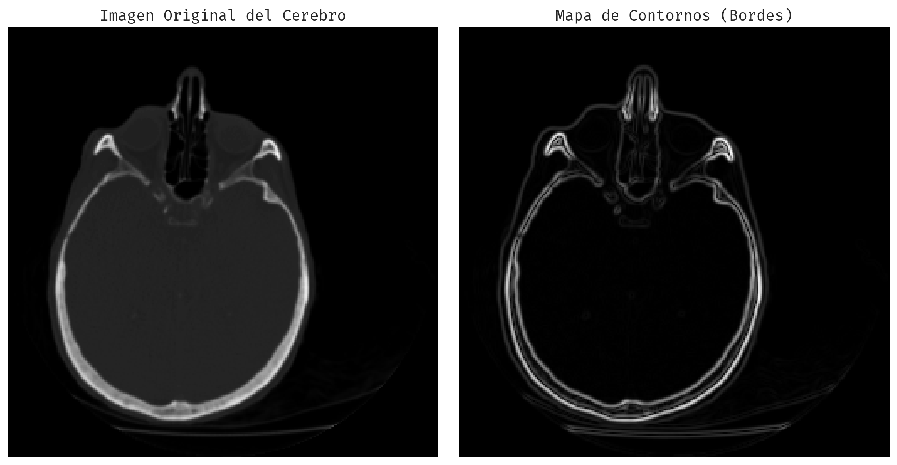